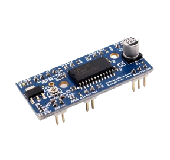
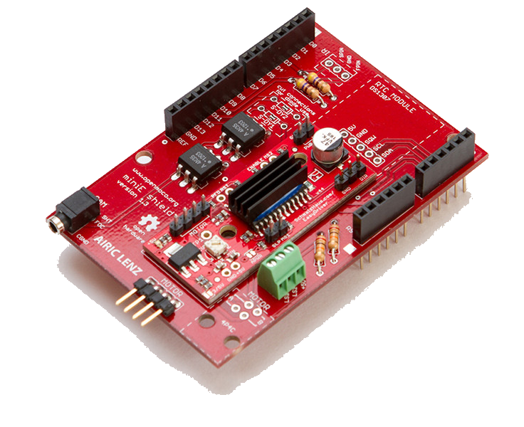

Sommaire
- LE MATERIEL
- La Carte EasyDriver 4.4
- Les cartes Netduino
- Les cartes FEZ
- LE LOGICIEL
- LES FASCICULES
1. LE MATERIEL
1.1 La Carte EasyDriver 4.4
Spark Fun Electronics
- Présentation
- Alimentation: 7 à 30 Vcc maxi
- Commande: via un microcontrôleur 0 - 5 Vcc (mode, direction et vitesse)
- Sortie: 150 à 750 mA maxi par phase
- Dimensions: 48 x 21 x 18 mm
- Schéma: : EasyDriver v4.4
- Fiche technique: : EasyDriver Stepper Motor Driver
- Distributeur: GOTRONIC
Cette carte de commande permet de contrôler facilement un moteur pas-à-pas bipolaire jusqu'à 750 mA par phase. Elle fonctionne par défaut avec 8 micro-pas.
Elle est basée sur le circuit Allegro A3967 et permet de contrôler un moteur pas-à-pas (par ex: ITC-VNC-2) très facilement à partir d'un microcontrôleur (deux broches pour le mode, une broche pour la direction et une pour la vitesse). Le module permet de fonctionner en mode pas complet, demi-pas, quart de pas ou 1/8 de pas (mode par défaut).
Pour simplifier la connectique, elle peut être intallée sur une carte miniE Shield
|  |  |
| EasyDriver 4.4 | miniE Shield |
1.2 Les cartes Netduino
Secret Labs
- Microcontrôleur : STM32F405RG 32 bits à architecture Cortex-M4 cadencé à 168 MHz.
- RAM : 100 KB (164+)*.
- Flash : 384 KB (1408KB)*.
- Port Ethernet : 10Mbps (Wifi:802.11b/g/n)*.
- E/S numériques : 22
- Entrées analogiques : 6
- Stockage: carte µSD
- IDE : Microsoft Visual Studio
- Framework : .NETMF 4.3
- Langages de programmation : C#, VB
 |
 |
| Netduino + 2 | Netduino 3 wifi* (compatible Gadgeteer) |
- Sites à consulter: Netduino, NETMF
- Distributeurs :Mouser Electronics
1.3 Les cartes FEZ
GHI Electonics (Extrait)
- Microcontrôleur : 180 MHz 32-bit ARM Cortex-M4.(120 MHz 32-bit ARM Cortex-M3 )*
- SoC(SoM)* : G80 G120*
- RAM : 156 KB(2.87 MB)*.
- Flash : 256 KB (13.67 MB)*.
- E/S numériques : 53(60)*
- Entrées analogiques : 16(8)*
- Réseaux : Ethernet TCP/IP, WiFi, and SSL.
- Stockage: carte µSD
- IDE : Microsoft Visual Studio
- Framework : .NETMF 4.3
- Langages de programmation : C#, VB
 |
 |
| PANDA III | COBRA III* (compatible Gadgeteer) |
- Sites à consulter : GHI ELECTRONICS, NETMF
- Distributeurs : Mouser Electronics
2. LE LOGICIEL
2.1 Contenu du répertoire proposé au téléchargement
Le répertoire proposé au téléchargement (au format zip ou tar.gz) contient la solution Netduino_EasyStepperMot composée :
- Du projet EasyStepperDriver : le code source de la classe EasyStepperDriver.
- Du projet Netduino: un exemple d'utilisation de cette classe avec une carte Netduino.
2.2 Le NuGet MicroToolsKit
La dernière version compilée de la classe EasyStepperDriver se situe dans la bibliothèque MicroToolsKit disponible sur nuget.org.

Organisation des classes contenues dans MicroToolsKit [lien]
Note : Installer cette bibliothèque dans le projet simplifie l'utilisation de cette classe.
2.3 Les Wikis
Des wikis sont dédiés aux cartes Netduino et GHI Fez. Ils proposent au téléchargement :
- Deux fascicules d'exemples de code pour les cartes Netduino. [lien]
- Un fascicule d'exemples de code pour les cartes FEZ. [lien]
2.4 Description et utilisation de la classe EasyStepperDriver
- Rôle: Contrôler une carte de commande de moteur pas à pas EasyDriver v4.4.
- Assembly: MicroToolsKit (disponible sur
nuget.org)
- Espace de noms: Microtoolskit.Hardware.MotorDrivers
Création d'un projet avec l'IDE Visual Studio
- Créer un nouveau projet en suivant la démarche décrite dans le chapitre "Premier programme en C# étape par étape" du Wiki dédié à une carte Netduino ou du Wiki dédié à une carte GHI Fez. Ces Wikis sont accessibles ici.
- Utiliser le gestionnaire de paquets NuGet pour ajouter la bibliothèque MicroToolsKit ( nuget.org) dans le projet. (Dans l'explorateur de solution, clic droit sur les Références du projet puis choisir Gérer les packages NuGet.... Installer le paquet.)
- Ajouter l'espace de noms Microtoolskit.Hardware.MotorDrivers dans l'en-tête du fichier source.
- Créer un objet en utilisant un des constructeurs EasyStepperDriver. Selon le besoin, la carte peut être contrôlée à l'aide de 2, 3, 4, 5 ou 6 sorties numériques.
- Commander le moteur en rotation avec la méthode Turn.
- Optionnel : activer la carte avec la méthode WakeUp si la broche Sleep est connectée. (Utiliser éventuellement la méthode Sleep pour réduire sa consommation) Désactiver la commande du moteur à l'arrêt (si la broche /Enable est connectée) avec la méthode DisableOutputs pour limiter son échauffement. Ne pas oublier de réactiver les sorties avec EnableOutputs.
Exemple
using System;
using System.Threading;
using Microsoft.SPOT;
using GHI.Pins;
using Microtoolskit.Hardware.MotorDrivers;
namespace PANDA_3_EasyStepperMot
{
public class Program
{
public static void Main()
{
// N=200 pas - U=12V - C=200g/cm - EasyStepperMotor v4.4
UInt16 delay = 2; UInt32 nbpas = 200;
var stepper = new EasyStepperDriver(FEZPandaIII.Gpio.D13, FEZPandaIII.Gpio.D12, FEZPandaIII.Gpio.D10, FEZPandaIII.Gpio.D11);
while (true)
{
// 45° for ITC-VNC-1 motor
stepper.StepMode = EasyStepperDriver.Mode.Full; stepper.StepDirection = EasyStepperDriver.Direction.Backward;
stepper.Turn(25);
Thread.Sleep(1000);
// 360° for ITC-VNC-1 motor
stepper.Turn(nbpas, EasyStepperDriver.Direction.Forward, delay, EasyStepperDriver.Mode.Full);
Thread.Sleep(1000);
}
}
}
}
Constructeurs
| Syntaxe | Description | |
 |
EasyStepperDriver(Pins DirectionPin, Pins StepPin) | Instancie un objet "EasyStepperDriver". Contrôle de la direction et du nombre de pas.
Configuration par défaut: Forward, mode huitième de pas. |
|
EasyStepperDriver(Pins DirectionPin, Pins StepPin, Pins SleepPin) | Instancie un objet "EasyStepperDriver". Contrôle de la direction, du nombre de pas et fonction Sleep/WakeUp.
Configuration par défaut: Forward, Sleep activé, mode huitième de pas |
|
EasyStepperDriver(Pins DirectionPin, Pins StepPin, Pins StepModePinOne, Pins StepModePinTwo) | Instancie un objet "EasyStepperDriver". Contrôle de la direction, du nombre de pas et du mode.
Configuration par défaut: Forward, mode huitième de pas Exemple var stepper = new EasyStepperDriver(FEZPandaIII.Gpio.D13, FEZPandaIII.Gpio.D12, FEZPandaIII.Gpio.D10, FEZPandaIII.Gpio.D11); |
|
EasyStepperDriver(Pins DirectionPin, Pins StepPin, Pins StepModePinOne, Pins StepModePinTwo,Pins SleepPin) | Instancie un objet "EasyStepperDriver". Contrôle de la direction, du nombre de pas, du mode et fonction Sleep/WakeUp.
Configuration par défaut: Forward, Sleep activé, mode huitième de pas |
|
EasyStepperDriver(Pins DirectionPin, Pins StepPin, Pins StepModePinOne, Pins StepModePinTwo,Pins SleepPin, Pins EnablePin) | Instancie un objet "EasyStepperDriver". Contrôle de la direction, du nombre de pas et fonction Sleep/WakeUp.
Configuration par défaut: Forward, Sleep activé, mode huitième de pas, Enable activé |
Enumérations
| Syntaxe | Description | |
 |
Direction |
- Forward: sens horaire - Backward: sens anti-horaire |
|
Mode |
- Full: pas entier - Half: demi pas - Quarter: quart de pas - OneEighth: huitième de pas (mode par défaut) |
Propriétés
| Syntaxe | Description | |
 |
IsDriverSleep | Retourne : - False si la logique et les sorties sont activées (mode par défaut) - True si la logique et les sorties sont désactivées |
|
IsOutputsEnable | Retourne : - True si les sorties sont activées (mode par défaut) - False si les sorties sont désactivées |
|
StepDelay | Retourne ou fixe la durée d'un pas en ms |
|
StepDirection |
Retourne ou fixe le sens de rotation: 0: horaire 1: anti-horaire Exemple stepper.StepDirection = EasyStepperDriver.Direction.Backward; |
|
StepMode | Retourne ou fixe le mode de fonctionnement du moteur: 0: pas entier 1: demi pas 2: quart de pas 3: huitième de pas (mode par défaut) Exemple stepper.StepMode = EasyStepperDriver.Mode.Full; |
|
Steps | Retourne le nombre de pas que le moteur doit effectuer |
Méthodes
| Syntaxe | Description | |
|
bool DisableOutputs() | Désactivation des sorties A et B de la carte EasyDriver. Renvoi un booléen attestant de l'opération. (La broche Enable doit être initialisée à l'aide d'un constructeur avant d'utiliser cette méthode) |
|
bool EnableOutputs() | Activation des sorties A et B de la carte EasyDriver. Renvoi un booléen attestant de l'opération. (La broche Enable doit être initialisée à l'aide d'un constructeur avant d'utiliser cette méthode) |
|
bool Sleep() | Désactivation de la logique de commande et des sorties A et B de la carte EasyDriver. Renvoi un booléen attestant de l'opération. (La broche SLP doit être initialisée à l'aide d'un constructeur avant d'utiliser cette méthode) Mode activé par défaut |
|
void Turn(UInt32 steps, int [delay=2]) | Commande du moteur pas à pas: - steps: Nombre de pas à effectuer - delay: durée d'un pas (2ms par défaut) Exemple stepper.Turn(25); |
|
void Turn(UInt32 steps, Mode mode, direction direction, int [delay=2]) | Commande du moteur pas à pas: - steps: Nombre de pas à effectuer - mode: Mode de fonctionnement (Full, Half, Quarter, OneEighth) - direction: Sens de rotation (Forward, Backward) - delay: durée d'un pas (2ms par défaut) Exemple stepper.Turn(nbpas, EasyStepperDriver.Direction.Forward, delay, EasyStepperDriver.Mode.Full); |
|
bool WakeUp() | Activation de la logique de commande et des sorties de la carte EasyDriver. Renvoi un booléen attestant de l'opération. (La broche SLP doit être initialisée à l'aide d'un constructeur avant d'utiliser cette méthode) |